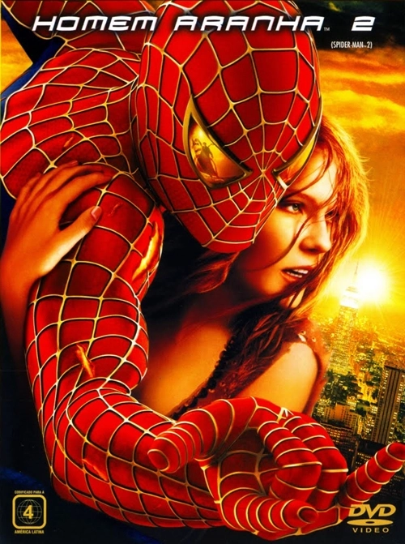
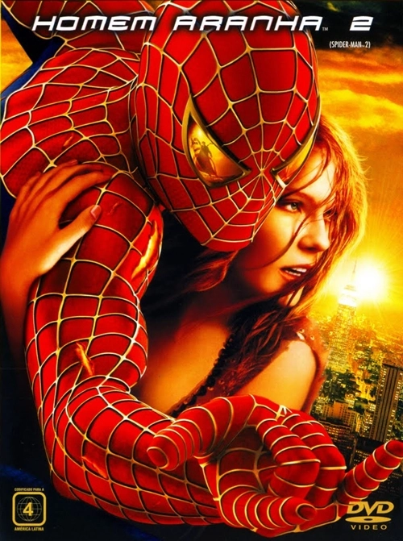

Filmes

Homem Aranha 2

Em Homem-Aranha 2, após derrotar o Duende Verde, a vida de Peter Parker (Tobey Maguire
) muda por completo. Enquanto precisa lidar com seus problemas particulares Peter receve ainda uma má
notícia: O surgimento do Dr. Octopus (Alfred Molina), um homem que possui tentáculos presos ao corpo.
Batman Begins

Marcado pelo assassinato de seus pais quando ainda era criança,
o milionario Bruce Wayne (Christian Bale) decide viajar pelo mundo em busca de encontrar meios
que lhe permitam combater a injustiça e provocar medo em seus adversários. Após retornar a Gotham City, sua
cidade-natal, ele idealiza seu alter-ego: Batman um justiceiro mascarado que usa força, inteligência, e um
arsenal tecnológico para combater o crime.
X-men: Primeira Classe

Em X-Men: Primeira classe, Charles Xavier conhece Erik Lehnsherr, filho
de judeus que foram assassinados pelos nazistas durante a Segunda Guerra Mundial. Erik apenas escapa
graças ao seu poder mutante de controlar mentais, que permitiu que fugisse para a França. Charles e Erik, logo
se tornam bons amigos. Em 1965, Charles decide usar seus poderes psíquicos para ensinar jovens alunos
mutantes a usaremm seus dons para fins pacíficos.
Homem Aranha 2
Em Homem-Aranha 2, após derrotar o Duende Verde, a vida de Peter Parker (Tobey Maguire ) muda por completo. Enquanto precisa lidar com seus problemas particulares Peter receve ainda uma má notícia: O surgimento do Dr. Octopus (Alfred Molina), um homem que possui tentáculos presos ao corpo.
Batman Begins
Marcado pelo assassinato de seus pais quando ainda era criança, o milionario Bruce Wayne (Christian Bale) decide viajar pelo mundo em busca de encontrar meios que lhe permitam combater a injustiça e provocar medo em seus adversários. Após retornar a Gotham City, sua cidade-natal, ele idealiza seu alter-ego: Batman um justiceiro mascarado que usa força, inteligência, e um arsenal tecnológico para combater o crime.
X-men: Primeira Classe
Em X-Men: Primeira classe, Charles Xavier conhece Erik Lehnsherr, filho de judeus que foram assassinados pelos nazistas durante a Segunda Guerra Mundial. Erik apenas escapa graças ao seu poder mutante de controlar mentais, que permitiu que fugisse para a França. Charles e Erik, logo se tornam bons amigos. Em 1965, Charles decide usar seus poderes psíquicos para ensinar jovens alunos mutantes a usaremm seus dons para fins pacíficos.